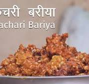

Kachari Recipe

Ingredients:
- 1 C Chana Dal
- 1 tsp finely chopped, Ginger
- 2 Green Chilies, finely chopped
- 2 Dry Red Chilies, de-seeded and finely chopped
- ½ – ¾ C sliced, Onion (optional but recommended)
- ½ C finely chopped, fresh Coriander (cilantro)
- ¼ tsp Ajwain (Carom Seeds)
- ¾ tsp Jeera (Cumin Seeds)
- ½ – ¾ tsp Red Chili Powder, adjust amount to taste
- ½ tsp Turmeric Powder
- 1½ tsp crushed, Coriander Seeds
- Salt to taste (I used half a teaspoon)
- Oil for deep frying
Procedures:
- Wash the chana dal, two to three times, and soak in sufficient water for five hours. Drain the water and coarsely grind (or even better, pulse it) the dal using approximately four tablespoons of water.
- Transfer the ground dal to a bowl and add ginger, green chilies, dry red chilies, onion, coriander, ajwain, jeera, red chili powder, turmeric powder, crushed coriander seeds, and salt. Mix well.
- Heat oil in a kadhai or a pan for deep frying. Once the oil is hot, reduce the heat to medium and drop small portions of the batter into the oil. Fry until golden brown and crispy.
- Drain the fried kachris on a paper towel to remove excess oil.
- Serve hot with green chutney and tamarind chutney.